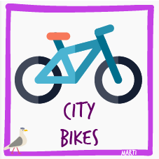

Lake Erken Phytoplanktons
The Biomass data of Sweden's Lake Erken.

Women Participation in Research Organizations ℹ️
Research funding organisations: Presidents and members of the highest decision-making body.
🔽 Download

🔽 Download
City e-bikes
Bu veri setinde, dört durak arasındaki bisiklet kullanımının süre verisi bulunmaktadır.
🔽 Download


Global Plastic Production
World-wide Total Global Plastic Production through the years
🔽 Download